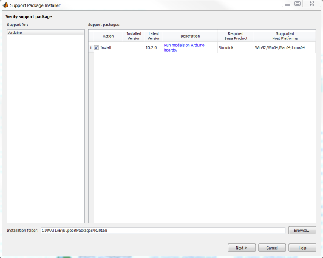
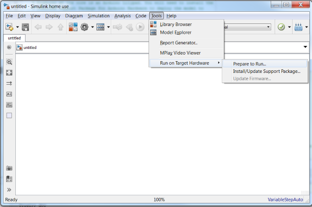
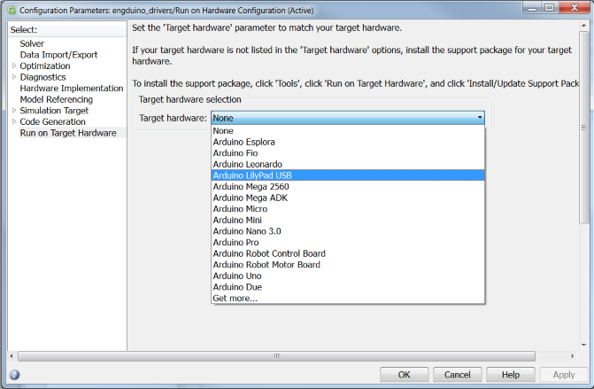
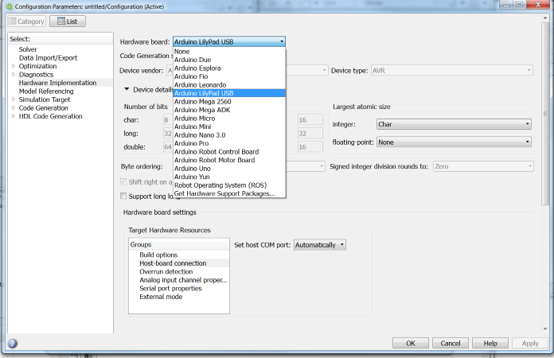

Setup and Configuration Guide
Install software and setup hardware connection.
Contents
Required Software
- Simulink
- Simulink Support Package for Arduino Hardware
- Simulink Support Package for Engduino hardware
1. Install Simulink Support Package for Arduino Hardware
Engduino at its core is an Arduino Lilypad. You will need to install the Simulink Support Package for Arduino Hardware to deploy the model to Engduino.
Launch the installer, follow through the installation.

Simulink will begin download and install the package automatically.
2. Configure target hardware
Once you have installed the support package, you may configure the target hardware in Simulink. Create a new model in Simulink, on the top bar, click Tools -> Run on Target Hardware -> Prepare to Run...

For Simulink 2015a, select Run on Target Hardware and choose arduino lilypad USB as the target device

For Simulink 2015b, select Hardware Implementation and choose hardware board as arduino lilypad USB

Start building your model and deploy it to Engduino.
3. Build Simulink model with Engduino
Note: Engduino modelling blocks are not available in the Simulink Library Browser.
To start building your Simulink, open the Simulink Support Package for Engduino Hardware folder, locate the engduino_driver.slx file for the Engduino modelling blocks. Copy and paste the block that you would like to use to your model